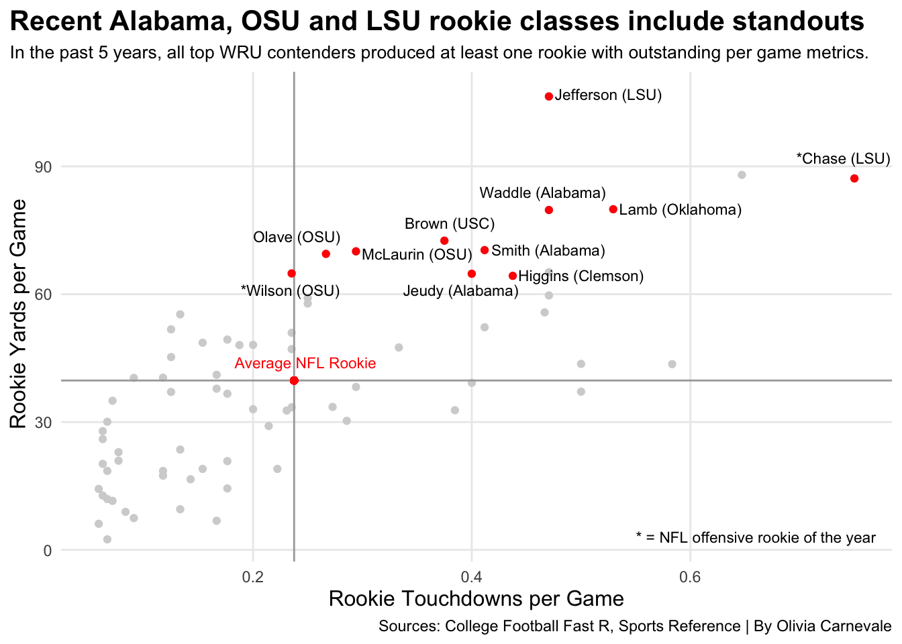

Justin Jefferson. Ja’Marr Chase. LSU. WRU. As a, let’s say, mild, Ohio State and Packers fan, hearing those names, that school, that argument every time I watch a football-related show is grating on my ears. But who really is the modern WRU? Am I petty, is it actually the Tigers with recent outputs like Jefferson and Chase? I went into this willing to get my feelings hurt, this time, of my own doing, but let’s see how it went.
First, what teams deserve to be in this argument? For this, I looked at the number of draft picks by the top schools, specifically in rounds one through three, since the year 2000.
Who are the WRU-conversation-worthy teams? Ohio State, LSU, USC, Oklahoma, Florida and Alabama. And to my (pleasant) surprise, LSU isn’t on top, Ohio State is thanks to Jaxon Smith-Njigba’s first-round selection by the Seattle Seahawks (count one of hurt feelings for me) just over a week ago.
Code
library(tidyverse)library(cfbfastR)library(ggtext)draft23 <-cfbd_draft_picks(year =2023)draft22 <-cfbd_draft_picks(year =2022)draft21 <-cfbd_draft_picks(year =2021)draft20 <-cfbd_draft_picks(year =2020)draft19 <-cfbd_draft_picks(year =2019)draft18 <-cfbd_draft_picks(year =2018)draft17 <-cfbd_draft_picks(year =2017)draft16 <-cfbd_draft_picks(year =2016)draft15 <-cfbd_draft_picks(year =2015)draft14 <-cfbd_draft_picks(year =2014)draft13 <-cfbd_draft_picks(year =2013)draft12 <-cfbd_draft_picks(year =2012)draft11 <-cfbd_draft_picks(year =2011)draft10 <-cfbd_draft_picks(year =2010)draft09 <-cfbd_draft_picks(year =2009)draft08 <-cfbd_draft_picks(year =2008)draft07 <-cfbd_draft_picks(year =2007)draft06 <-cfbd_draft_picks(year =2006)draft05 <-cfbd_draft_picks(year =2005)draft04 <-cfbd_draft_picks(year =2004)draft03 <-cfbd_draft_picks(year =2003)draft02 <-cfbd_draft_picks(year =2002)draft01 <-cfbd_draft_picks(year =2001)draft00 <-cfbd_draft_picks(year =2000)draft <-bind_rows(draft23, draft22, draft21, draft20, draft19, draft18, draft17, draft16, draft15, draft14, draft13, draft12, draft11, draft10, draft09, draft08, draft07, draft06, draft05, draft04, draft03, draft02, draft01, draft00)teamlist <- draft %>%filter(position =="Wide Receiver") %>%filter(round <=3) %>%group_by(college_team) %>%tally(sort=TRUE) %>%ungroup() %>%top_n(10, wt=n) %>%pull(college_team)teamorder <- draft %>%filter(position =="Wide Receiver") %>%filter(round <=3) %>%group_by(college_team) %>%tally(sort=TRUE) %>%ungroup() %>%rename(order = n) %>%top_n(10, wt=order)stacked <- draft %>%filter(position =="Wide Receiver") %>%filter(round <=3) %>%filter(college_team %in% teamlist) %>%group_by(college_team, round) %>%tally() %>%arrange(college_team) %>%ungroup() %>%mutate(round =as.factor(round))stacked <- stacked %>%inner_join(teamorder)ggplot() +geom_bar(data=stacked, aes(x=reorder(college_team, order), weight=n, fill=round)) +scale_fill_manual(values =c("#90A7F9", "#3756C7", "#1F3054")) +coord_flip() +scale_y_continuous(breaks=c(1,2,3,4,5,6,7,8,9,10,11,12,13,14,15)) +labs(x="", y="Total Number of WR Drafted",title="Since 2000 OSU has the most WR drafted in the first three rounds", subtitle="The first 5 teams' picks are somewhat evenly distributed, but Alabama WRs dominate the first round.",caption="Source: College Football Fast R | By Olivia Carnevale") +theme_minimal() +theme(plot.title =element_text(size =15.5, face ="bold"),axis.title =element_text(size =12), plot.subtitle =element_text(size=10), panel.grid.minor =element_blank(),plot.title.position ="plot" )
Now that we know what teams produce draft picks, what have these picks done once in the NFL? Let’s zoom in a little bit. Sure, the Buckeyes may have the most top round picks since 2000, but what about recently? What about these receivers’ NFL production? To determine this, we will shift our focus to the past five years and to season total yards.
To understand how these teams developed their wide receivers, we also will focus on rookie numbers: what school produces the most NFL-ready wide receivers? Bringing yards into it, we will look at which school’s wide receivers average the most yards their rookie seasons and how that stacks up to the average NFL rookie. Again, Ohio State’s on top due to consistent quantity, but with USC narrowly behind.
So, the Buckeyes may produce a high quantity of the most consistently strong average NFL rookie wide receivers. But who has the biggest stars, the biggest standouts? This leads us back to Jefferson and Chase. This leads us to look at the wide receivers with the most outstanding per game metrics in their rookie seasons, again, in relation to the average rookie.
To no surprise, Jefferson and Chase are far out in front; they are the modern superstars. However, LSU isn’t the only school that produces standout wide receivers, each top team in the conversation defined earlier, except Florida, has at least one great rookie from the past five years.
LSU may have two far in front, one better in yards per game, the other in touchdowns per game, but the Crimson Tide’s are close and the Buckeyes even tighter, both producing consistent, balanced outputs.
In addition, there are only two schools to produce a wide receiver NFL Offensive Rookie of the Year in this time period: LSU and Ohio State.
Code
draftnflcombined22 <- wrdraft22 %>%left_join(wr22, by=c("name"="Player"))draftnflcombined21 <- wrdraft21 %>%left_join(wr22, by=c("name"="Player"))draftnflcombined20 <- wrdraft20 %>%left_join(wr22, by=c("name"="Player"))draftnflcombined19 <- wrdraft19 %>%left_join(wr22, by=c("name"="Player"))draftnflcombined18 <- wrdraft18 %>%left_join(wr22, by=c("name"="Player"))draftnflcombined <-bind_rows(draftnflcombined22, draftnflcombined21, draftnflcombined20, draftnflcombined19, draftnflcombined18)%>%mutate(playerteam =paste(name, college_team) )new <- draftnflcombined %>%filter(Yds >0, TD >0, G >0) %>%mutate(yg = Yds/G,tdg = TD/G ) teams <-c("LSU", "Ohio State", "USC", "Alabama", "Florida", "Oklahoma", "Tennessee", "Penn State", "Michigan", "Miami", "Clemson")wrteam <- draftnflcombined %>%filter(college_team %in% teams)wrname <- wrteam %>%filter(Yds >0, TD >0, G >0) %>%mutate(yg = Yds/G, tdg = TD/G ) %>%group_by(playerteam) %>%summarize(tdg = (tdg),yg = (yg) )wrtop <- wrteam %>%mutate(yg = Yds/G,tdg = TD/G ) %>%filter(yg >60, tdg > .23, G >0) %>%group_by(playerteam) %>%summarize(tdg = (tdg),yg = (yg) )ggplot() +geom_point(data=new, aes(x=tdg, y=yg), color="lightgrey") +geom_vline(xintercept=0.2375367, color ="darkgrey") +geom_hline(yintercept=39.75049, color ="darkgrey") +geom_point(data=draftnflcombined, aes(x=0.2375367, y=39.75049), color="red") +geom_text(aes(x=0.248, y=44, label="Average NFL Rookie"), color="red", size=3) +geom_point(data=wrtop, aes(x=tdg, y=yg), color="red") +geom_text(aes(x=.525, y=107, label="Jefferson (LSU)"), color="black", size=3) +geom_text(aes(x=.591, y=80, label="Lamb (Oklahoma)"), color="black", size=3) +geom_text(aes(x=.74, y=92, label="*Chase (LSU)"), color="black", size=3) +geom_text(aes(x=.465, y=84, label="Waddle (Alabama)"), color="black", size=3) +geom_text(aes(x=.5, y=64.5, label="Higgins (Clemson)"), color="black", size=3) +geom_text(aes(x=.47, y=70.5, label="Smith (Alabama)"), color="black", size=3) +geom_text(aes(x=.38, y=76.7, label="Brown (USC)"), color="black", size=3) +geom_text(aes(x=.35, y=69.5, label="McLaurin (OSU)"), color="black", size=3) +geom_text(aes(x=.39, y=61, label="Jeudy (Alabama)"), color="black", size=3) +geom_text(aes(x=.24, y=73.5, label="Olave (OSU)"), color="black", size=3) +geom_text(aes(x=.234, y=61, label="*Wilson (OSU)"), color="black", size=3) +geom_text(aes(x=.66, y=3, label="* = NFL offensive rookie of the year"), color="black", size=3) +labs(x="Rookie Touchdowns per Game", y=" Rookie Yards per Game",title="Recent Alabama, OSU and LSU rookie classes include standouts", subtitle="In the past 5 years, all top WRU contenders produced at least one rookie with outstanding per game metrics.",caption="Sources: College Football Fast R, Sports Reference | By Olivia Carnevale") +theme_minimal() +theme(plot.title =element_text(size =15.4, face ="bold"),axis.title =element_text(size =12), plot.subtitle =element_text(size=10), panel.grid.minor =element_blank(),plot.title.position ="plot",legend.position ="none" )

However, this still doesn’t lead us to one direct answer for who is WRU. Sure, Ohio State pumps out draft picks, but LSU and USC are not far behind. The Buckeyes again produce the most consistent, great rookies, again, with USC narrowly behind. LSU, on the other hand, produces the biggest stars with Alabama and Ohio State showing strength in numbers.
This turns it to you, what do you value most for a WRU team? Is it producing a high quantity, not solely numbers, but of consistently strong NFL wide receivers? If so, your answer should be Ohio State. Is it producing superstars every few years? If so, then it’s LSU. Is it somewhere in the middle, leading to Alabama?
I’m sure you can guess what my answer is, but for you, I’ll let the graphs do the talking.